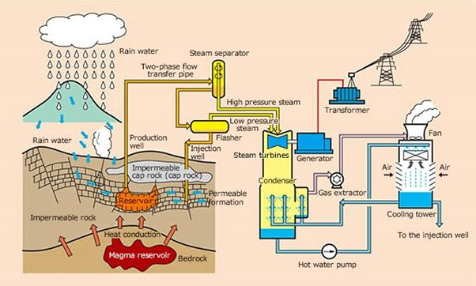
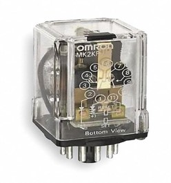
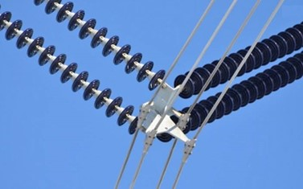

CHAPTER TWO
2.1 TRAINING SECTIONS
1. Generation of Geothermal Power2. Switch Gear Room
3. Grid
4. Motors
5. Transformers
1.GENERATION OF GEOTHERMAL POWER PROCESS
Components of geothermal power plant
a. Separator
To combat damage to the turbines, plants install separators-the most important components at a geothermal plant. Separators ensure only clean, dry steam enters the turbine. There are two common separator designs-the vertical cyclone and horizontal separator How separator works The cyclonic or centrifugal type separator uses a series of fins to generate high-speed cyclonic flow. The velocity of the steam causes it to swirl around the body of the separator, throwing the heavier, suspended water to the wall where it drains down to a steam trap installed under the unit.b. Cooling tower
Cooling tower is an integrated part of any geothermal power plant because waste heat from turbine exhaust steam must be continuously rejected to make the plants operate. According to heat dump choice, the cooling system can be classified as wet cooling and dry cooling. Functions of cooling tower Cooling water cools the warm water discharged from the condenser and feed the cooled water back to the condenser. Cooling towers are used for large size power stations specially in water shortage areas.c. Gas removal system
Non-condensable gases such as Sulphur oxide, carbon dioxide, methane, ammonia, hydrogen sulphide and hydrogen are gaseous emissions that are found dissolved in geothermal water. Above are gases that do not condense into a liquid within the operating temperatures of the refrigeration system.d. Turbine Generator
In a turbine generator, a moving fluid-water, steam, combustion gases, or air pushes a series of blade mounted on a rotor shaft. The force of the fluid on the blade’s spins/rotates the rotor shaft of a generator. The generator in turn converts mechanical energy (kinetic) of the rotor to electrical energy.  Stator winding The stator winding is fitted with a three-phase winding. A rectifier is used to convert the power from alternating to direct form. A regulator is used to control the field current so that the output voltage of the alternator-rectifier is properly matched to the battery voltage as the speed of the engine varies. Rotors Rotors are the moving part in an alternator that have permanent magnets that move around the stators iron plates to generate an alternating current (AC). Rotors require existing motion to function, so only once the engine or turbine is already running will a rotor work with a stator to provide a charge. Conducting an IR test for rotor at Olkaria 1 Generator exciter Exciter or DC relay is a device which forces the DC machine-held excitation to build up during starting or which functions when the machine voltage has built up to a given value. Excitation creates the electromagnetic field to make this mechanical to electrical conversion occur. The type of excitation system used in Olkaria geothermal power plants is a brushless excitation system. This is an inside- out AC generator that delivers its AC voltage to the rotor of the main generator, and receives its excitation from the stator of the same generator. Automatic voltage regulator An automatic voltage regulator (AVR) is an electronic device that maintains a constant voltage level to electrical equipment on the same load. The AVR regulates voltage variations to deliver constant, reliable power supply. PMG The PMG (permanent magnet generator) is a system which is used for secondary exciting. The PMG provides stable and reliable electric energy for AVR regardless of the generators terminal voltage. The generator with PMG excitation system can provide 300% rated current during short-circuit, which occurs for 5-10 seconds.2. SWITCH GEAR ROOM
Switch gear refers to wide range of switching devices that all serve the same purpose: controlling, safe guarding and isolating power systems. Types of switch gears a. Low voltage (LV) switch gear Low voltage switch gear governs mediators among low voltage services and technology and human beings. Single main LV switch board is normally present which would be fed to a mains transformer b. Medium voltage (MV) switch gear. MV switchgear is classed based on its purpose and insulating method. Voltage level, effective voltage, constant voltage tolerance voltage or impulse voltage are all parameters for MV switch gear panel c. High voltage (HV) switch gear. High voltage switch gear is indeed a power system that deals with voltages more than 36kV. The arcing created during switching operations is likewise very high due to the high voltage level. Components of switch gear room a. Circuit breakers b. Motor control center c. Relays d. Busbars e. DcsRELAYS
1.latching relay-this is a two position electrically actuated switch that maintains either contact position indefinitely without any power being sent to. This allows electrician to control circuit by simply providing a single pulse to the relay control circuit.  2.Electromechanical relay-An electromechanical relay is a type of relay which function using a magnetic field produced by an electromagnetic coil when a control signal is applied to it. It’s called as electromechanical since it has moving contacts in the output circuit which are operated by applying an electrical signal. A type of electromechanical relay which I interacted with is Earth fault relay that can sense faults between phase and earth. Its main function is to operate for the leakage currents to the earth. Conducting IR test for elctromechanical relay at Olkaria 1RELAY FUNCTIONS
59-over voltage 87-trasformer differential 12-over frequency 32-reverse power and low forward power 51N-neutral instantaneous over current 51-instateneous over current 50-over current 78-lock rotor 24-volts/hertz 21-distance relay 46-negative phase sequence relay 49-thermal 40G-loss of excitation 27-undervoltage 67-generator power 60-voltage balanceCIRCUIT BREAKERS
During my training I interacted with various circuit breakers which include: 1. Air circuit breaker 2. Gas circuit breaker 3. Miniature circuit breaker 4. Vacuum circuit breaker Air circuit breaker An air circuit breaker (ACB) is an electrical device used to provide overcurrent and short circuit protection for electric circuits over 800 Amps to 10K Amps. These are usually used in low voltage applications below 450V. we can find those systems in distribution panels below 450V. Conducting IR test and timing test for air circuit breaker at Olkaria 2 Vacuum circuit breaker This is a kind of circuit breaker where the arc quenching takes place in a vacuum medium. A vacuum circuit breaker is used to disconnect power in medium voltage range from 11kV to 33Kv. Once the breaker is opened within the contact vacuum, an arc can be generated by the contacts Gas circuit breaker. Sulphur hexafluoride circuit breakers protect electrical power stations and distribution systems by interrupting electric currents, when tripped by a protective relay. Instead of oil, air, or vacuum, a Sulphur hexafluoride gas to cool and quench the arc on opening a circuit Miniature circuit breaker Miniature circuit breaker is an electrical switch which automatically switches off the electrical circuit during an abnormal condition of the network means in overload condition as well as faulty condition.MCB is much sensitive to over current than a fuse. Circuit breaker test Circuit breaker testing ( also known as ‘tripprofiling’) is used to test both the performance of individual switching mechanisms and the timing of the overall tripping system. Circuit breaker testing is used to test both the performance of individual switching mechanisms and the timing of the overall tripping system Types of circuits breaker tests a. Contact resistance test The main contacts and the primary stabs need to be checked periodically to detect abnormal wear, inadequate lubrication and loose pivot points inside the circuit breaker. This test should be calculated usinf low voltage , direct current (DC) power supply ( low resistance ohmmeter) to pass current from line to load, with the circuit breaker in the closed position. b. Insulation resistance tests The circuit breaker insulation system is a critical area that requires testing and evaluation. Insulation systems can weaken due to the heat created by arc interruption, especially if they are not routinely maintained. Weak insulation can result into catastrophic failure especially during arc interruption. The insulation resistance test is useful for detecting major defects in the insulation system, but it can also be used as final safety check before returning the breaker to service.MOTOR CONTROL CENTER
Motor control center is an assembly to control some or all electric motors in a central location. Due to industrial development, the requirement for the automation and mechanization of the different industrial processes requires many motors, so in order to control the motors, MCC’s are required. The MCC must protect the motor from; overcurrent overload low voltage phase failure phase reversal protection ground fault protection Components in a motor control centre. bus bar circuit breaker magnetic contactor relay control contactor auxiliary contactor control transformer cable installation control panel enclosure limit switchBus bar
A bus bar is a bar that is made up of brass, copper etc, the major component of a bus bar is to provide or distribute the required power to the electrical equipment. In MCC, the busbar would act as a power distributor. The major advantage of using a bus bar in an MCC is that we can eliminate the wiring of several components, so because of this, the size of the MCC would be reduced and also the number of parts in it. Overload relay These relays would protect the motor from overheating, the overheating could be caused by the overload of the driven machinery. It can also be caused due to the low voltage level or if there is an open phase in a three-phase system. So, when the excessive current id drawn from a specified amount of time, the overload relay would open and the motor will be disconnected from the power source. Control transformers This is used to decrease voltage level. Sometimes it’s necessary to operate the control circuit at low voltages than the power circuit. Magnetic contactors Magnetic contactor is used in an MCC to start or stop a motor. Mostly, there would be a remote-control device to start and stop the motor and for this purpose, we can use a contactor. The operation of a contactor is based on the electromagnetic principle. Time delay relay The major purpose of a time delay relay is to provide the on delay and off delay timing. So, this device can be used for the automatic time setting, this device can be combined with the other control equipment in an MCC, like a magnetic contactor.Miniature circuit breaker
The purpose of MCB is to disconnect a circuit incase if there is an excessive current flow in the circuit, or in case if there is an electrical load that exceeds capacity. Major purpose of MCCMotor starting
Motor starting is an important process, and the starting of motor should be slow and gradual and this would be useful to protect a machine. Some industrial machines could be damaged if its operated very fast initially instead of gradually increasing the speed of a machineOperational control
This device should maintain the required operational speeds and characteristics. So, by maintaining or controlling the operational speed it can protect the motor, machine, materials and operatorStopping
The MCC must be capable to provide the fast stopping of the motor because in certain cases the machine must be stopped quickly and this should be achieved by the MCC. Emergency stops must be carried out for certain industrial machinery.Reversing
The direction of the machine rotation would be required to change in an industrial process and this should be done easily. In certain case, continuous changing of direction is required in an industrial process.Damage prevention
The machine should be protected from any damages because it could cost a lot. An example of this would be
preventing the pileups in a conveyor by a machine. So, the machine must do the necessary actions such as
reverse, stop slow. The MCC must control the machine according to functionality.
DCS (Distributed control system)
A distributed control system is a digital automated industrial control system (ICS) that uses geographically
distributed loops throughout a factory, machine or control area.
Components of DCS
• PLC
• HMI
• RTU
 • PLC (programmable logic controllers)
A programmable logic controller (PLC) is an industrial computer control system that continuously monitors
the state of input devices and makes decisions based upon a custom program to control the state of output devices.
• HMI (human machine interface)
A human machine interface (HMI) is a user interface or dashboard that connects a person to a machine,
system or device. The term can technically be applied to any screen that allows a user to interact with a device,
HMI is commonly used in context of industrial process
• RTU (remote terminal unit)
A remote terminal unit is a microprocessor controlled electronic device that interfaces objects in the physical
world to a distributed control system or SCADA system by transmitting elementary data toa a master system, and by
using messages from the master supervisory system to control connected objects.
• PLC (programmable logic controllers)
A programmable logic controller (PLC) is an industrial computer control system that continuously monitors
the state of input devices and makes decisions based upon a custom program to control the state of output devices.
• HMI (human machine interface)
A human machine interface (HMI) is a user interface or dashboard that connects a person to a machine,
system or device. The term can technically be applied to any screen that allows a user to interact with a device,
HMI is commonly used in context of industrial process
• RTU (remote terminal unit)
A remote terminal unit is a microprocessor controlled electronic device that interfaces objects in the physical
world to a distributed control system or SCADA system by transmitting elementary data toa a master system, and by
using messages from the master supervisory system to control connected objects.
3. MOTORS
A motor is an electromechanical device which converts electrical power to mechanical power.
All motors I interacted with during the training process were induction motors
An induction motor or asynchronous motor is an AC electric motor in which the electric current in the rotor needed
to produce torque is obtained by electromagnetic induction from the magnetic field of the stator winding.
An induction motor can therefore be made without electrical connections to the rotor.
A three phase induction motors are used in Olkaria power plants. A three-phase induction motor converts 3
phase input electrical power into output mechanical power. A three-phase induction motor consists of a stator and a rotor.
Motor connections techniques
Star connection
In star connection, the same ends of the three coils are connected to create a neutral point.
Star connection is used only when we require less power and it would only give low power compared to
delta connection because the three terminals are shorted and it would become neutral. When starting a motor,
windings are connected in star configuration and this reduces the voltage across each winding 3. This also
reduces the torque by a factor of three.
Delta connection
In delta windings, each winding receives 415 volts. After motor is started in star connection, after a period
of time the winding are reconfigured as delta and the motor runs normally. In delta connection high torque is produced.
4. TRANSFORMERS
Types of transformers used in a geothermal power plant
a. Generator transformer (GT)
b. Unit transformer (UT)
c. Auxiliary transformer (AT)
d. Voltage transformer (VT)
e. Current transformer (Ct)
a. Generator transformer
Generator transformer is the largest transformer on a power station and connects the generator output to the grid.
b. Unit transformer
Unit transformer means the transformers through which the generated voltage is transformed to grid voltage (132 Kv)
used for evacuation of power to the national grid. Its function is to deliver the power to the motor, fans, pumps,
lighting etc.
c. Auxiliary transformer
Auxiliary transformers are used for lighting purposes, heating the train wagons or for the safety systems supply or
the substations own supply.
d. Current transformer
A current transformer is a type of transformer that is used to reduce or multiply an alternating current. It produces
a current on its secondary which is proportional to the current in its primary. Current transformers are an instrument transformer.
e. Voltage transformer
Voltage transformers (VT) also called potential transformers are parallel connected type of instrument transformer.
They are designed to present a negligible load to the supply being measured and have an accurate voltage ratio and
phase relationship to enable accurate secondary connected wiring.
METHODS OF TESTING TRANSFORMERS
Testing transformers is more important than many people realize, and whenever CT or VT test is conducted, it’s important
to ensure the technicians use the correct transformer testing equipment to ensure that all electrical, mechanical,
and thermal standards are being met.
i. Turns ratio testing.
Turns ratio transformer testing is commonly used to ensure that the winding ratio between the primary and secondary
coils are aligned to recommended specifications. Theis type of transformer testing also ensures the transformer will
provide either step up or step down, for instance, compromised of 100 primary turns and 10 secondary turns will work
to reduce the voltage by factor of 10.
Insulation resistance testing
Insulation resistance transformer testing also known as megger test, is used to determine the quality of transformer
insulation within itself. These tests are conducted with a megohmmeter, one of the transformer test instruments, that
operates similar to multi-meter. In order to pass the test, the insulation of a transformer must be determined to have a
greater resistance the defined by international standard for that transformer type.
Power factor testing
Power factor transformer testing is the process wherein the power loss of the insulation systems is tested by measuring
the angel the resulting current of power that occurs when AC voltage is applied. For the test result to be optimal,
the angle of the current should measure 90o;
The test is completed with a power factor test kit, and its can be completely regularly throughout the life of the entire transformer.
Resistance testing
This type of transformer testing once a transformer has been left to settle at the same temperature of the surrounding air.
The reason for this is to check for any differences between the opens and windings within the transformer.
This helps to ensure that all the circuits are still wired and connected correctly. This test is conducted using an ohmmeter.
a. Load or copper losses test
b. Temperature rise test
c. Partial discharge test
d. Frequency response analysis test
e. Transformer oil breakdown test
5.GRID (electrical substation)
Electricity substation is a network of electrical equipment which is connected in a structured way in order to supply
electricity to end consumers. There is outgoing and incoming circuitry of which is having its circuit breakers, isolaters,
transformers and busbar system etc.
List of substation equipment
1. Instrument transformers
2. Current transformers
3. Potential transformers
4. Conductors
5. Insulators
6. Busbars
7. Lighting arrestors
8. Circuit breakers
9. Relays
10. Capacitor banks
11. Batteries
12. Metering indication instruments
13. The outgoing feeders
14. Switchyard
Instrument transformer
The instrument transformer is a static device utilized for reduction of higher currents and voltages for safe and practical
usage which are measurable. The transformers are also used for actuation of AC protective relay through supporting voltage and current.
Current transformer
A current transformer is a gadget utilized for the transformation of higher value currents into lower values. It is utilized in
an analogous manner to that of AC instruments, control apparatus and meters.
Voltage transformer
The potential transformers are similar in characteristics as current transformers but are utilized for converting high voltages
to lower voltages for protection of relay system and for lower rating metering of voltage measurements.
Conductors
Conductors are the materials which permit flow of electrons through it. The best conductors are copper and aluminum.
The conductors are utilized for transmission of energy from place to place over substations.

Insulators
The insulators are materials which do not permit flow of electrons through it. Insulators resisting electric property.
There are numerous types of insulators such as shackle, strain type, suspension type and stray type.
Insulators are used in substations for avoiding contact with human or short circuit.
Isolators
The isolators in substations are mechanical switches which are deployed for isolation of circuits when there is an interruption of current.
These are known with the name of disconnected switches operation under no-load conditions and are not fortified with arc quenching devices.
Busbars
The busbar is among the most important elements of the substation and is a conductor which carries current to a point having
numerous connections with it. The busbar is a kind of electrical junction which has outgoing and incoming currents paths.
Whenever a fault occurs in the busbar, entire connected to that specific section should be tripped for giving thorough isolation
in a small time to avoid danger rising due to conductor’s heat
Lighting arrestors
Lightning arrestors can be considered as the first ever components of a substation. These are having a function of protecting
equipment of substation from high voltages and also limiting the amplitude and duration of the currents flow.
Circuit breakers
The circuit breakers are such types of switches utilized for closing or opening circuits at the time when a fault occurs within
the system. When any fault occurs in the system, a relay is sending the tripped command to the circuit breaker which moves the
contacts apart hence avoiding any damage to the circuitry.
Relays
Relays are dedicated component of electrical substation equipment for the protection of system against abnormal situations e.g., faults.
Relays are basically sensing gadgets which are devoted for sensing faults and are determining units’ location as well as sending
interruption message of tripped command to the specific point of the circuit.
Capacitor banks
Capacitor bank is defined as a set of numerous identical capacitors which are connected in either parallel or series inside an
enclosure and are utilized for the correction of power factor as well as protections of circuitry of the substation.
The use of capacitor banks is an economical technique for power factor maintenance and for correction problems related to power lag.
Switch yard
The switch yards, switches, circuit breakers and transformers for the connection and disconnection of the transformers and
circuit breakers. These are also having lighting arrestors to protect the substation or power station from strokes of natural lighting.
Voltage classifications and their clearances
Classifications can be combined into categories below.
a. High (HV), extra high (EHV) and ultra-high voltages (UHV)-115,000 to 1,100,000 VAC
b. Medium voltage (MV) -2,400 to 69,000 VAC
c. Low voltage (LV)-240 to 600 VAC
CHAPTER THREE
3.1 CHALLENGES
DCS (Distributed control system)
A distributed control system is a digital automated industrial control system (ICS) that uses geographically distributed loops throughout a factory, machine or control area.Components of DCS
• PLC • HMI • RTU
• PLC (programmable logic controllers)
A programmable logic controller (PLC) is an industrial computer control system that continuously monitors
the state of input devices and makes decisions based upon a custom program to control the state of output devices.
• HMI (human machine interface)
A human machine interface (HMI) is a user interface or dashboard that connects a person to a machine,
system or device. The term can technically be applied to any screen that allows a user to interact with a device,
HMI is commonly used in context of industrial process
• RTU (remote terminal unit)
A remote terminal unit is a microprocessor controlled electronic device that interfaces objects in the physical
world to a distributed control system or SCADA system by transmitting elementary data toa a master system, and by
using messages from the master supervisory system to control connected objects.
3. MOTORS
A motor is an electromechanical device which converts electrical power to mechanical power. All motors I interacted with during the training process were induction motors An induction motor or asynchronous motor is an AC electric motor in which the electric current in the rotor needed to produce torque is obtained by electromagnetic induction from the magnetic field of the stator winding. An induction motor can therefore be made without electrical connections to the rotor. A three phase induction motors are used in Olkaria power plants. A three-phase induction motor converts 3 phase input electrical power into output mechanical power. A three-phase induction motor consists of a stator and a rotor. Motor connections techniques Star connection In star connection, the same ends of the three coils are connected to create a neutral point. Star connection is used only when we require less power and it would only give low power compared to delta connection because the three terminals are shorted and it would become neutral. When starting a motor, windings are connected in star configuration and this reduces the voltage across each winding 3. This also reduces the torque by a factor of three. Delta connection In delta windings, each winding receives 415 volts. After motor is started in star connection, after a period of time the winding are reconfigured as delta and the motor runs normally. In delta connection high torque is produced.4. TRANSFORMERS
Types of transformers used in a geothermal power plant a. Generator transformer (GT) b. Unit transformer (UT) c. Auxiliary transformer (AT) d. Voltage transformer (VT) e. Current transformer (Ct)a. Generator transformer
Generator transformer is the largest transformer on a power station and connects the generator output to the grid.b. Unit transformer
Unit transformer means the transformers through which the generated voltage is transformed to grid voltage (132 Kv) used for evacuation of power to the national grid. Its function is to deliver the power to the motor, fans, pumps, lighting etc.c. Auxiliary transformer
Auxiliary transformers are used for lighting purposes, heating the train wagons or for the safety systems supply or the substations own supply.d. Current transformer
A current transformer is a type of transformer that is used to reduce or multiply an alternating current. It produces a current on its secondary which is proportional to the current in its primary. Current transformers are an instrument transformer.e. Voltage transformer
Voltage transformers (VT) also called potential transformers are parallel connected type of instrument transformer. They are designed to present a negligible load to the supply being measured and have an accurate voltage ratio and phase relationship to enable accurate secondary connected wiring. METHODS OF TESTING TRANSFORMERS Testing transformers is more important than many people realize, and whenever CT or VT test is conducted, it’s important to ensure the technicians use the correct transformer testing equipment to ensure that all electrical, mechanical, and thermal standards are being met.i. Turns ratio testing.
Turns ratio transformer testing is commonly used to ensure that the winding ratio between the primary and secondary coils are aligned to recommended specifications. Theis type of transformer testing also ensures the transformer will provide either step up or step down, for instance, compromised of 100 primary turns and 10 secondary turns will work to reduce the voltage by factor of 10.Insulation resistance testing
Insulation resistance transformer testing also known as megger test, is used to determine the quality of transformer insulation within itself. These tests are conducted with a megohmmeter, one of the transformer test instruments, that operates similar to multi-meter. In order to pass the test, the insulation of a transformer must be determined to have a greater resistance the defined by international standard for that transformer type. Power factor testing1.High noise levels since we didn’t have ear muffs
2.Hydrogen two sulphide emissions since it causes difficulties in breathing and dangerous in high concentrations.
3.2 CONCLUSSION AND RECOMMENDATIONS
Conclusion
During the attachment session, the training has enabled me to have a good experience in gothermal power production. I also gained quality orientation from KenGen as the best parastatal and company in kenya. I am greatly humbled to have got the opportunity to learn and experience a lot in the organization.
Recommendation
I would recommend that KenGen should offer safety equipments like overalls,reflector and helmet since it was a challenge accesing and purchasing them.